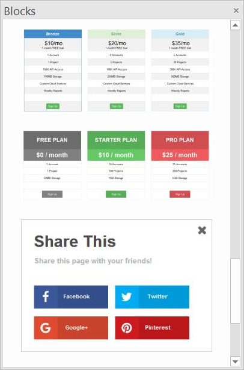
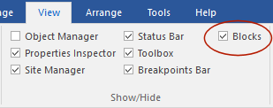
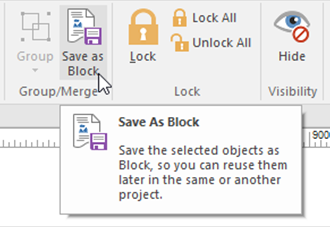
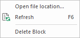
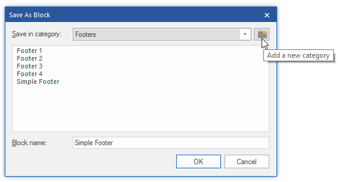

An Introduction to Blocks
A few years ago, WYSIWYG Web Builder started as a simple drag & drop web design tool with only a few objects and tools.
As time went by, many objects and tools have been added based on user feedback. This is great for existing users because they know their way around in the application and every new tool makes the software more powerful. However for new users all these tools may be a little bit overwhelming, because where do you start? That is where Blocks come in handy!
With Blocks you can easily drag & drop predefined blocks (like headers/ footers, text blocks, forms) to the page, so you have the basic layout ready in just a few minutes. After that you can change the layout and/or style to finish the website.
Blocks are basically just groups of standard WWB objects so once dragged to the page you can fully customize the behavior and appearance of the content. The application includes a dozen of standard blocks to help you get started, but you can also create your own blocks (by saving a group of objects as 'Block'), so you can reuse them in other pages or projects.
To show or hide the Blocks Manager go to Menu->View->Blocks.
A few years ago, WYSIWYG Web Builder started as a simple drag & drop web design tool with only a few objects and tools.
As time went by, many objects and tools have been added based on user feedback. This is great for existing users because they know their way around in the application and every new tool makes the software more powerful. However for new users all these tools may be a little bit overwhelming, because where do you start? That is where Blocks come in handy!
With Blocks you can easily drag & drop predefined blocks (like headers/ footers, text blocks, forms) to the page, so you have the basic layout ready in just a few minutes. After that you can change the layout and/or style to finish the website.
Blocks are basically just groups of standard WWB objects so once dragged to the page you can fully customize the behavior and appearance of the content. The application includes a dozen of standard blocks to help you get started, but you can also create your own blocks (by saving a group of objects as 'Block'), so you can reuse them in other pages or projects.
To show or hide the Blocks Manager go to Menu->View->Blocks.
Creating your own blocks
You can also create your own Blocks. To create a Block, select all the objects you want to be part of the block and the choose 'Save As Block' in the menu. You can even create your own categories!
You can also create your own Blocks. To create a Block, select all the objects you want to be part of the block and the choose 'Save As Block' in the menu. You can even create your own categories!
A preview of each Block will be displayed to give you an idea what it will look like on the page.


Adding a Block to the page
To add a Block to the page, simply drag & drop it from the Blocks Manager to the workspace. It is also possible to double click the item to add it. Note that most Blocks use Layout Grids, so they will be inserted on the next free row on the page.
To add a Block to the page, simply drag & drop it from the Blocks Manager to the workspace. It is also possible to double click the item to add it. Note that most Blocks use Layout Grids, so they will be inserted on the next free row on the page.
Downloading and installing additional blocks
In the 'Free extras' section of the website you can download additional Block packs.
https://www.wysiwygwebbuilder.tk/free_extras.html
The .wbl files in these packages must be unzipped in the blocks folder of the WYSIWYG Web Builder system folder. The quickest way to get to this folder is by right clicking in hte Block Manager and selecting 'Open file location' in the context menu.
Note that there are several sub folders for the categories!
In the 'Free extras' section of the website you can download additional Block packs.
https://www.wysiwygwebbuilder.tk/free_extras.html
The .wbl files in these packages must be unzipped in the blocks folder of the WYSIWYG Web Builder system folder. The quickest way to get to this folder is by right clicking in hte Block Manager and selecting 'Open file location' in the context menu.
Note that there are several sub folders for the categories!


After you have added new Blocks you can use the 'Refresh' option in the context menu option to update the list.
To remove a Block from the list use the 'Delete Block' command.
To remove a Block from the list use the 'Delete Block' command.

Note:
Most Blocks were designed to be used as part of a pages with Layout Grids, so they can be flexible. That means that the layout will be 'floating' (from the top of the page). And because these Blocks use Layout Grids, they can be re-arranged with the Arrange tools (move forward/back etc)
Some Blocks use full width layers which have an initial size of 970 pixels. So you will have to resize those layers (and content) in case you use a different page width.
Most Blocks were designed to be used as part of a pages with Layout Grids, so they can be flexible. That means that the layout will be 'floating' (from the top of the page). And because these Blocks use Layout Grids, they can be re-arranged with the Arrange tools (move forward/back etc)
Some Blocks use full width layers which have an initial size of 970 pixels. So you will have to resize those layers (and content) in case you use a different page width.